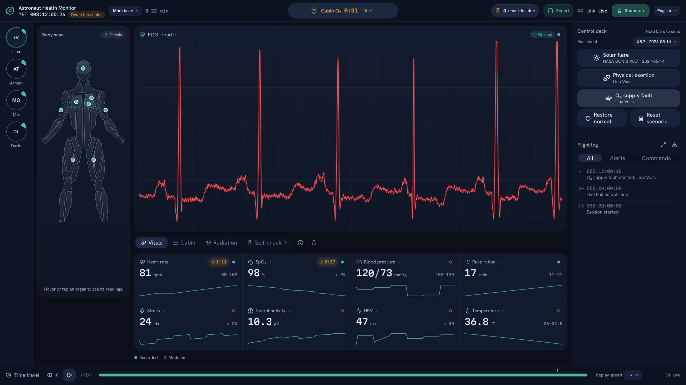

Challenge · Create Health Monitoring Software for Astronauts on Space Missions
Astronaut
Health Monitor
See it. Forecast it. Act on it.
Even when Earth is 22 light-minutes away.
Team Ultra Sun
Axmadov Asadbek · team owner
Bobokulov Azizbek
Sultonmurotov Behzod
